Japan / Hokkaido / Shibetsucho
Shibetsucho
Shibetsucho · Hokkaido
Shibetsucho
Highlighted on the Hokkaido map.
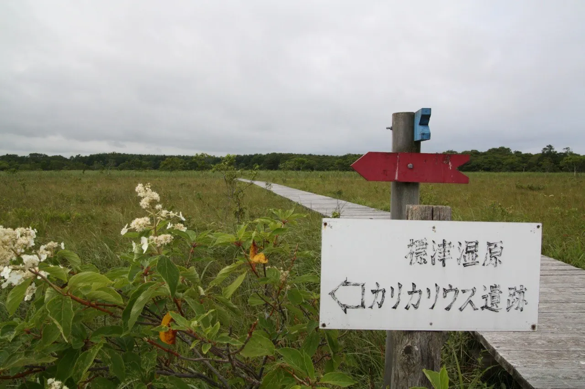
Stay
標津川温泉ぷるけの館ホテル川畑
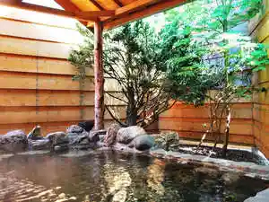
Shibetsu Kawa Onsen Purukeno Kan Hoteru Kawabata
ゲストハウス潮目
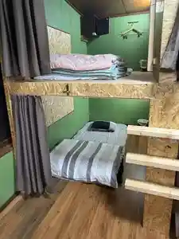
Gesutohausu Shiome
温泉ホテル 喜楽来
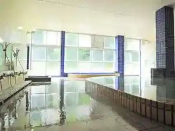
Onsen Hoteru Kiraku Rai
Ｔａｂｉｓｔ ＯＮＳＥＮ ＭＯＴＥＬ２７２
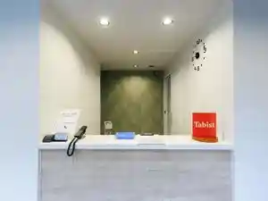
T A B I S T O N S E N M O T E L 2 7 2
ホテルクテクン
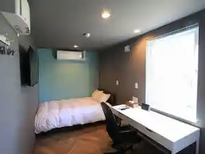
Hoterukutekun
CABIN KUTEKUN

Cabin Kutekun
ペンション フォルメン
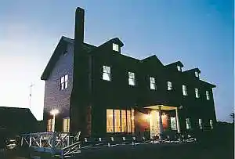
Penshon Forumen
Dining
ホニコイ
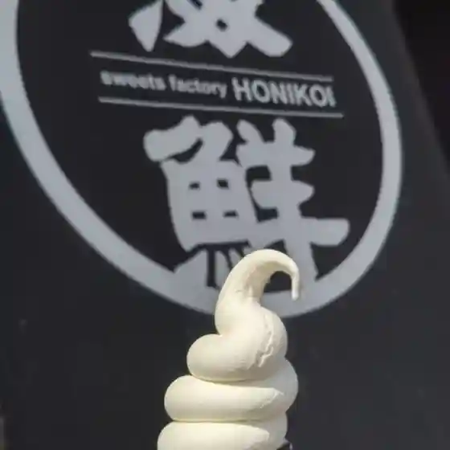
Honikoi
食事処しのだ
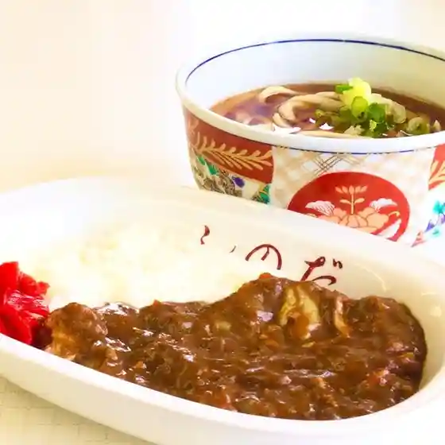
Shokuji Shoshi Noda
PEANUT GALLERY

Peanut Gallery
旅館なりた

Ryokan Narita
ふじ
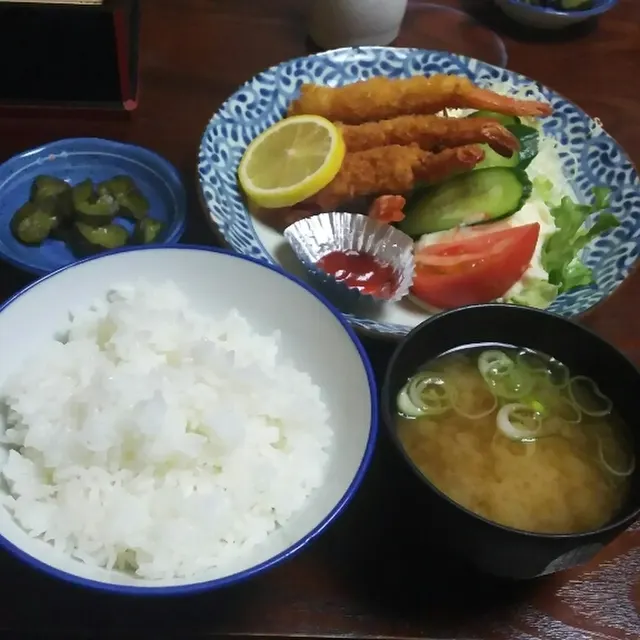
Fuji
ぎんれい精肉店
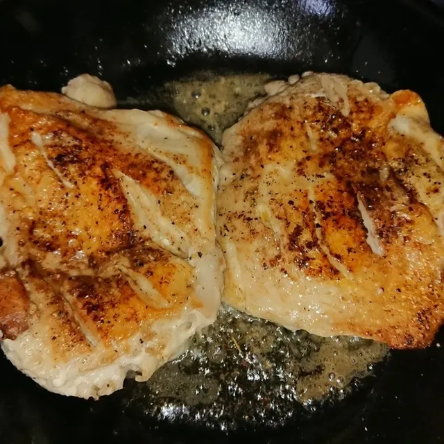
Ginrei Seinikuten
さわ
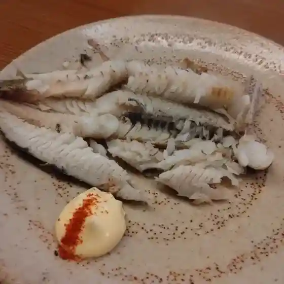
Sawa
DCMニコット 標津店
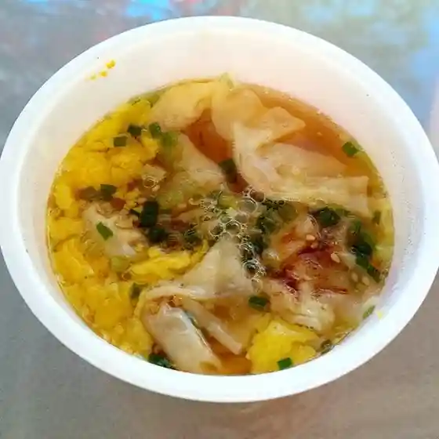
Dcm Nikotto Shibetsu Mise
セイコーマート 標津まるよし店
Seikoomaato Shibetsu Maruyoshi Mise
あけみ
Akemi
Aマート しべつ店
A Maato Shibetsu Mise
標津町農業協同組合
Shibetsu Machi Nougyou Kyoudoukumiai
CAFE de TORY
Cafe De Tory
島田商店
Shimada Shouten
あかつき だいにんぐ
Akatsuki Dainingu
ホテルワカマツ
Hoteruwakamatsu
喫茶 雨傘
Kissa Amagasa
カフェ&レストラン テラス
Kafe & Resutoran Terasu
温泉ホテル 喜楽来
Onsen Hoteru Kiraku Rai
セブンイレブン 標津町店
Sebun'Irebun Shibetsu Machi Mise
川村水産
Kawamura Suisan
居酒屋ひとみ
Izakaya Hitomi
ホテル川畑
Hoteru Kawabata
BIRDTABLE
Birdtable
Sights
Shibetsucho Po River Shiseki Nature Park
Shibetsucho Po River Shiseki Nature Park